我要栽9棵树，请你帮帮忙
小道具趣味问题
在所有数学游戏中，某些涉及真实事物的问题有可能是最难的。面对这类问题，如果不借助实物，而只靠在纸上写写画画，或者凭空想象，最后的结果往往是徒劳无功。借助实物解决问题，真正做到亲自动手，是一件令人惬意的事。不仅如此，有实物在手，解题的整个过程就像在摆弄一个玩具或者做游戏一样。
这一章我们将借助硬币、火柴、邮票、纸张和绳索自娱自乐。所有这些都是装在你口袋或者钱包里的小玩意儿。第一个问题只需要4枚一模一样的硬币，如果你之前曾经和我一起乘火车出行，那么我肯定用这个问题为难过你。
你能用4枚一模一样的硬币，在桌上摆出下图中的图案，使第5枚硬币可以毫无阻碍地平移到图中阴影部分，并与这4枚硬币接触吗？
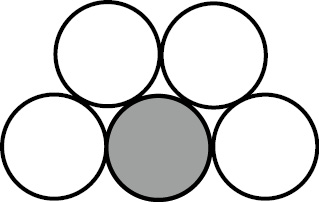
这道题目要求你确定4枚硬币的摆放位置，以确保第5枚硬币正好可以与它们接触。动手试试看吧，只盯着看是做不好这道题的。
本题唯一的解法如下图所示，即将这些硬币排列成菱形。为确保硬币的相对位置保持固定，在将任意一枚硬币平移至新的位置后，都要保证这枚硬币正好可以接触到另外三枚硬币中的两枚。
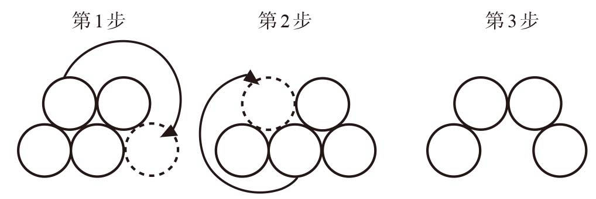
现在，你需要解决的问题变成了将上图所示第1步中的排列变成题目要求的排列，同时必须保证平移到新位置之后的硬币正好可以接触到三枚硬币中的两枚。具体方法参见图中的第2步和第3步。
硬币问题通常难度不大，但是非常有趣，让你一下子就进入忘我的境界，直到谜底揭晓时才会恍然大悟。一般来说，这些问题的复杂程度远远超出我们的预期，但是经过一番思考，我们通常都能成功找到答案。
上面这道题是亨利·恩斯特·杜德尼于一个世纪前设计的，下面这道题也是他的作品。
6枚硬币
你能用6枚硬币在桌上摆出下图中的图案，在阴影部分放入第7枚硬币并使之触碰到所有6枚硬币吗？
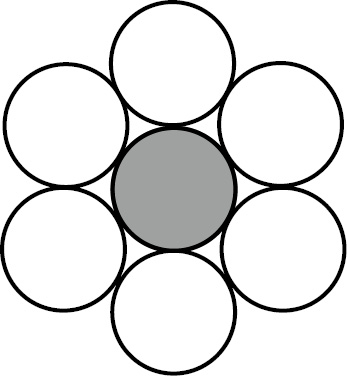
首先，你必须先将6枚硬币排列出一个初始图案，以确定这些硬币的相对位置。随后，在每次将一枚硬币平移到新的位置时，都要确保它可以触碰到另外5枚硬币中的两枚。整个过程中，不能让硬币离开桌面，也不能用一枚硬币推动另一枚硬币。
移动三枚硬币，就可以达成目标。
硬币问题很容易让人上瘾。一旦解开了上面这道题，你就会忍不住想再做一题。
三角形变直线
移动7次，你能将下图的三角形变成直线吗？与上题要求相同，每次将硬币移动到新位置时，都要保证它触碰到另外两枚硬币。此外，不能让硬币离开桌面，也不能用一枚硬币推动另一枚硬币。
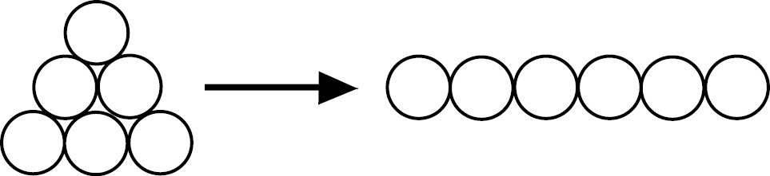
下面这道题需要使用8枚一模一样的硬币。
变化无穷的“水”
利用上面的规则，移动4次，可以将H变成O吗？
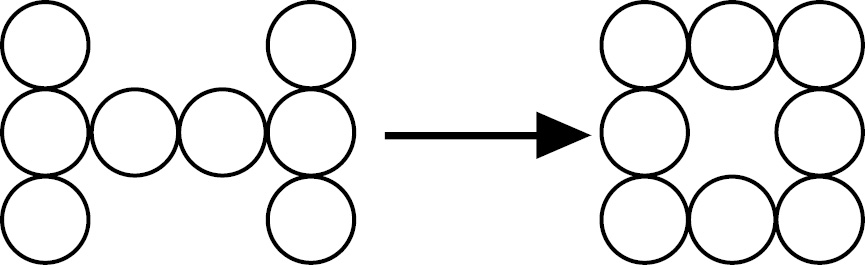
移动6次，可以将O变回H吗？
在前文中，我们已经与亨利·恩斯特·杜德尼有过一次接触。他设计的史密斯、琼斯和罗宾逊问题，在20世纪30年代曾掀起一阵逻辑推理问题的热潮。
杜德尼是英国也是世界最伟大的趣味问题设计师。在为报纸、杂志撰稿的40年职业生涯里，他设计了大量经典趣味数学问题。不仅数量之多无人能及，而且他从未停下创新的脚步。我在第一章中提到，杜德尼在《河滨杂志》长期主持“疑难问题”专栏，而就在史密斯、琼斯和罗宾逊问题（本书第7个问题）刊登在该专栏的当月，这位趣味问题设计大师离开了人世。
杜德尼的天赋或许可以追溯至他的祖父——在英国南部丘陵地区一边放牧一边自学数学和天文学的牧羊人。后来，这位牧羊人成了一名学校老师。再后来，他的儿子也成了一名老师。但是，1857年出生的杜德尼却无法适应制度化的教育方式，在13岁时辍学，成为伦敦政府行政部门的一名办事员。后来，厌倦了工薪阶层生活的杜德尼开始设计趣味问题，并向全英国的出版机构投稿。最后，他成了一名全职的趣味问题设计者。
杜德尼的作品不仅题材宽泛，而且内容有深度，这对于一名自学成才的人来说尤为难得。杜德尼拥有无比敏锐的算术头脑。在他于1907年出版的第一本书《坎特伯雷趣题集》（The C anterbury Puzzles）中有这样一道题：1和2的立方和等于9（13 + 23 = 1 + 8 = 9），请仿照此例，找出另外两个立方和等于9的数字。答案是：
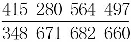
和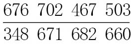
杜德尼称：“一位优秀的保险精算师和一名记者不嫌麻烦，算出了这两个数字的立方和。最后，他们都发现我给出的答案准确无误。”杜德尼只使用纸和笔就算出了这个答案，这个事实足以令所有人瞠目结舌。
杜德尼设计了大量的硬币问题，下面这道题选自1917年出版的《数学的乐趣》（Amusements in Mathemati cs）。
5枚一便士硬币
这道题非常难，条件却很简单。每位读者都知道使4枚硬币彼此距离相等的排列方法：先将3枚硬币平铺到桌面上，使它们彼此接触，组成一个三角形，然后将第4枚硬币叠放到三角形中心点的上方。这样一来，每枚硬币都与其他所有硬币相接触，且每两枚硬币之间的距离都相等。现在，请大家找出让5枚硬币彼此距离相等的排列方法，并保证每枚硬币都与其他所有硬币相接触。你将发现，5枚硬币的排列方法完全不同于4枚硬币。
为了降低这道题的难度，建议大家尽量使用大一些的硬币，例如两便士或10便士硬币，至少像我这样的笨人应该采取这个策略。杜德尼只给出了一个答案，但正确答案一共有两个。
约翰·杰克逊于1821年出版的《冬夜的推理游戏》（Rational Amusement for Winter Evenings）中有一首小诗：
我要栽9棵树，请你帮帮忙，
树要栽10行，
每行有3棵，
如能帮助我，盛情永不忘。
简单地说，就是把9棵树栽成10行，每行3棵，应该怎么栽？
答案如下图所示。
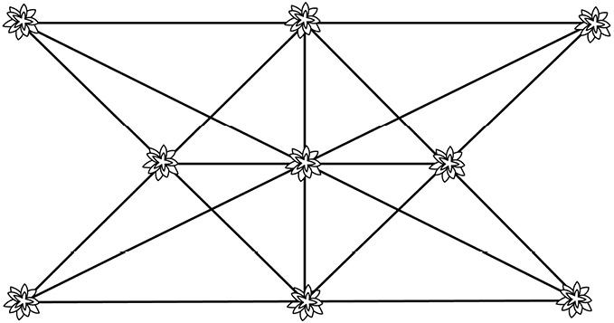
尽管没有证据表明这道题在杰克逊之前就已经出现，但杜德尼在《数学的乐趣》中称它的设计者是艾萨克·牛顿。解决栽树问题（需要栽若干棵树，使树排成若干行，每行有若干棵树）的最简便方法就是借助硬币。下面这道题是由杜德尼提出的。
栽10棵树
如下图所示，在一张很大的纸上放置10枚硬币。
拿掉其中4枚，将它们放到其他位置上，使这10枚硬币排成5条直线且每条直线上有4枚硬币。
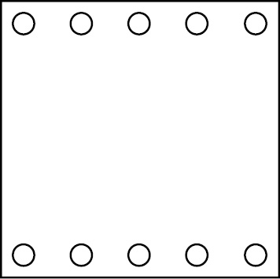
如果你能做到（杜德尼说难度不大），那么你能说出这道题有多少种解法吗（假设每次解题都从初始位置开始）？
在解这道题时，我们不容易看清硬币位置的微小变化，因此我建议大家在纸上标出硬币的初始位置。
杜德尼设计了几道将10个点（或10棵树）排成5行、每行包含4个点（或4棵树）的问题。如果无须遵循上一道题中只能移动4枚硬币的规定（也就是说，移动硬币的次数没有任何限制），则还有另外5种排列方法，也可以将10枚硬币排成5条直线，且每条直线上有4枚硬币。杜德尼把这5种排法分别称作星形、飞镖、指南针、漏斗、钉子排法。（他还把上一道题的排列方法称作剪刀排法。）下图所示是星形排法，你能找出其他4种排法吗？
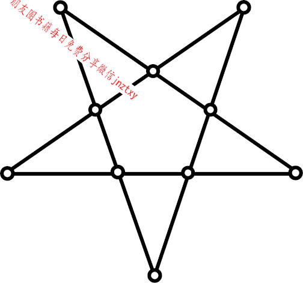
问大家一个问题：为什么20世纪初名气最大的那个亨利·杜德尼是一名女性？
爱丽丝·惠芬与亨利·恩斯特·杜德尼结婚时只有18岁，后来她成为一名可以与托马斯·哈代（Thomas Hardy）、伊迪斯·华顿（Edith Wharton）齐名的成功小说家。在为自己的作品署名时，她选择了夫姓，称自己为亨利·杜德尼夫人。她一共出版了大约50本小说，背景大多是英国东南部的乡村，那里有杜德尼夫妇建造的乡下庄园。两人都得到了伦敦文艺界的认可，爱丽丝还是菲利普·沙逊爵士（Sir Philip Sassoon）的知己。沙逊爵士不仅是一名富可敌国的国会议员，还是英国上流社会的活跃分子，经常在他位于肯特郡的豪宅里举办名人聚会。
杜德尼夫妇的关系一度非常紧张。由于爱丽丝有了婚外情，两人分居了一段时间。1916年，两人一起搬回位于刘易斯市的一幢房子里。他们有各自的书房，分别在楼上和楼下。爱丽丝在日记里详细记录了她与杜德尼（她称其为恩斯特）在刘易斯市一起度过的时光。1998年，这些日记得以出版。在这些日记里，爱丽丝用略显尖刻而又充满深情的笔触，描述了她与这位全世界最伟大的趣题设计大师的共同生活。有时候，他们的关系亲近到令人难以忍受的地步——杜德尼深爱着自己的妻子，以致常常妒火中烧。爱丽丝写道：“恩斯特的脾气太暴躁了，他无法控制自己，但他并没有意识到这个问题（我是这样认为的），所以也就不会想方设法改正了。归根结底，如果你嫁的是一个天才，而你自己又不是庸才，两个人的冲突自然在所难免……”
杜德尼有着异乎寻常的天赋，可以将日常生活中的普通事物变成趣味横生的数学问题。他曾经在伦敦的俱乐部里利用雪茄设计出下面这道独具匠心的趣题。他在书中写道：“在相当长的时间里，这道题牢牢地吸引着俱乐部会员们的注意力。他们一筹莫展，认为这道题不可能有解。但是，看完下面的介绍，你就会发现答案其实简单至极。”
这道题说的是雪茄，但我认为，如果借助硬币来思考，可能会更加容易。于是，我对这道题进行了改写。（如果你希望了解这道题的原貌，将所有的“硬币”改成“雪茄”即可。）
空间争夺赛
两名玩家坐在一张方形桌子旁边。第一名玩家先将一枚硬币放到桌子上，接着第二名玩家也做了同样的动作，就这样，两人交替在桌子上放硬币。条件只有一个：不可以触碰任何硬币。在桌子上放下最后一枚硬币的玩家获胜，因为他（她）占据了桌子上最后的空隙。
桌子面积必须大于一枚硬币，否则在第一名玩家放下第一枚硬币后，游戏就结束了。此外，所有硬币都必须一模一样。
有一名玩家肯定能赢得这场比赛。是谁呢？是第一名玩家，还是第二名玩家？他（她）应该采取什么办法才能确保自己获胜呢？
后文还会讨论杜德尼的趣题，但现在既然我们已经把硬币放到桌子上了，就先尽情享受硬币问题带给我们的乐趣吧。
1883年，苏格兰数学物理学家彼得·格思里·泰特（Peter Guthrie Tait）致函爱丁堡数学学会，称他在乘火车时发现了下面这道趣题。这件事让我进一步确定，自铁路问世之后，硬币问题就成为乘客们喜爱的一种消遣方式。
泰特在很多科学领域都做出过贡献，他对数学的贡献是创建了纽结理论。他对实验情有独钟，还是一位多产的作家（曾与开尔文男爵合著了一部经典的物理教材），但爱丁堡的学生们最崇拜他的地方是，他利用巨型磁铁、水流及满屋子的电火花完成了蔚为壮观的科学演示。不过，泰特最喜爱的道具可能是高尔夫球俱乐部。他对高尔夫球运动极为痴迷，并因此写了几篇研究高尔夫球（或称“旋转球状抛射物”）运动轨迹的论文。后来，他的儿子费雷迪成为一位知名的高尔夫球员，曾经两度夺得英国业余高尔夫球锦标赛的冠军。
下面这道题据说源于日本，但它得以在西方广为流传，则应归功于泰特。
泰特的棘手问题
如下图1所示，将两种硬币交替排列。如果你只有一种硬币，那么可以让正反面交替朝上摆放。接下来，你需要改变这8枚硬币的位置，把相同的4枚硬币放在一起，如下图2所示。
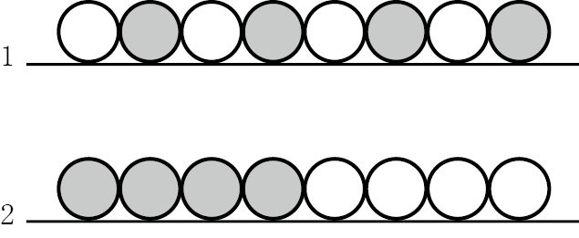
每次移动硬币时，必须同时移动相邻的两枚硬币。这两枚硬币可以移动到其他硬币所在直线的任何位置，但移动过程中不得变换彼此的位置：位于左侧的硬币必须始终在左侧，位于右侧的硬币必须始终在右侧。
你能通过4次移动完成这项任务吗？
做这道题时，如果不能立刻解决问题，就有可能失去信心。请大家不要轻易放弃，只要坚持下去，就有可能找到正确答案。
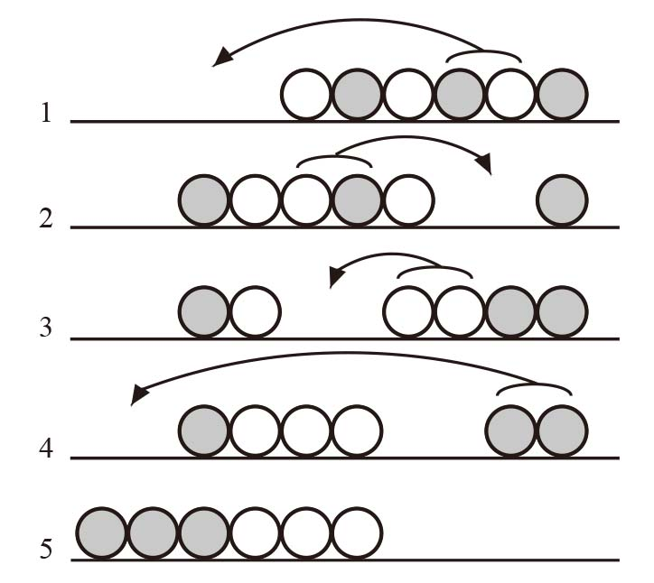
为帮助大家找到方法，我们先考虑相对简单的6枚硬币问题。注意，达成目标之后，所有硬币整体向左移动了两枚硬币的距离。
讨论到这里，我想不如顺势将最后一道泰特风格的问题介绍给大家吧。这道题只涉及5枚硬币，但多了一个限制条件：每次移动的两枚硬币必须是不相同的硬币。你可以只移动4次，将下图中上面的图案变成下面的图案吗？
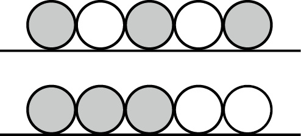
在上一章中，我们讨论过爱德华·卢卡斯曾经问同事的一道关于远洋客轮的问题。这位19世纪的法国数学家在他的《数学游戏》（Récréations Mathématiques）中介绍了下面两道传统趣题。
4摞硬币
如图所示，8枚硬币排成一行。每次移动硬币时，可以让这枚硬币向左或向右跳过两枚硬币，落在第3枚硬币上。每次可以跳过两枚单层硬币，或者叠放成一摞的两枚硬币。
如何移动4枚硬币，把这8枚硬币变成4摞，每摞两枚？
卢卡斯把下面这道题称作“青蛙和蟾蜍”。他建议大家使用国际象棋中的黑兵和白兵。如果手边没有国际象棋，用硬币也可以。
青蛙和蟾蜍
如下图所示，将3枚同一面值的硬币和3枚另一面值的硬币排成一条直线，两种硬币之间留1个空位。（或者以正反面区分这6枚硬币。）我们把左边的硬币称作“青蛙”，把右边的称作“蟾蜍”。青蛙只能由左向右移动，而蟾蜍只能由右向左移动。在沿着正确的方向移动时，青蛙和蟾蜍每次可以前进1格进入空位，或者跳过1枚硬币进入空位。
如何将所有青蛙都移到蟾蜍所在的位置，并将所有蟾蜍都移到青蛙所在的位置？
跳棋（或独立钻石棋）可能是最有名的一种棋子可以跳跃前进的单人游戏。1716年，博学的德国学者哥特弗里德·莱布尼茨（Gottfried Leibniz）说：“我非常喜欢独立钻石棋这个名称。”莱布尼茨在科学和哲学领域都有诸多贡献，包括发现微积分（与艾萨克·牛顿各自独立完成）、发明计算机以及推动二进制数字的应用（0和1分别对应他喜爱的独立钻石棋中的空洞和棋子）。但是，莱布尼茨在玩这个游戏时更喜欢反其道行之。通常的玩法是跳过棋子，进入空洞，同时将被跳过的棋子拿掉，但是莱布尼茨喜欢跳过空洞，然后在空洞处放置一枚棋子。他说：“你们也许会问，为什么要这样做呢？我的回答是：我希望发明一种完美无缺的艺术。”
下面，我们开始玩硬币跳棋吧。我们采用正常的规则：任何硬币都可以跳过另一侧为空位的相邻硬币，而被跳过的硬币将被拿掉。就像国际跳棋一样，在跳过一枚硬币之后，如果还可以再跳，那么你可以选择连续跳，一口气跳过多枚硬币。
三角跳棋
如下图所示，将10枚硬币排列成一个三角形。拿掉其中一枚硬币，再通过硬币跳跃的方式，使桌面上最后只剩下一枚硬币。
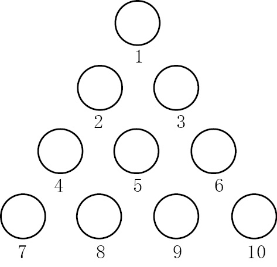
同前面的硬币问题一样，这道题也有极大的吸引力，让你恨不得立刻找到答案。在开始尝试之前，我建议你先找一张纸，并在纸上标出10个点，以免硬币错位。
一番摆弄之后你会发现，如果拿掉2号位上的硬币，就可以采用下面的6个步骤解题：
1．7号位上的硬币跳到2号位。（4号位上的硬币被拿掉。）
2．9号位上的硬币跳到7号位。（8号位上的硬币被拿掉。）
3．1号位上的硬币跳到4号位。（2号位上的硬币被拿掉。）
4．7号位上的硬币跳到2号位。（4号位上的硬币被拿掉。）
5．6号位上的硬币跳到4号位，再跳到1号位，又跳到6号位。（5号位、2号位和3号位上的硬币被拿掉。）
6．10号位上的硬币跳到3号位。（6号位上的硬币被拿掉。）
但是，我们还可以精益求精，找出5步解法。
我已经介绍了很多道硬币问题，几乎占去本部分篇幅的一半，这是因为硬币是趣味问题中使用最广泛的道具之一。其物理属性使其具有多种使用方法：它们既可以像筹码一样滑动、堆叠，又可以当作几何中的点，还可以用作跳棋的棋子。此外，硬币的正反两面截然不同，易于辨认。下一道题或者说魔术，正是基于硬币的这个特点设计的。
看不见的硬币
你是一名魔术师。在戴上眼罩之后，你请一名观众将10枚硬币平铺在你面前的桌子上，然后告诉你其中有多少枚硬币正面朝上。
你看不见这些硬币，也无法通过触摸的方式辨别硬币的正反面。
现在，你要把这些硬币分成两组，使每组中正面朝上的硬币个数相等。请问，应该如何分组？
在第一次看到这道题时，我对其印象深刻，但是这道题的解法给我留下了更加深刻的印象。
首先考虑在不戴眼罩的情况下如何解这道题。拿出10枚硬币，将它们平铺到桌面上，假设有3枚正面朝上。接下来，将这些硬币分成两组，使正面朝上的硬币数彼此相等。由于一共有3个正面，无法等分成两组，所以需要把几个硬币翻个面。解决这个问题的关键在于如何确定翻转哪些硬币，并考虑在戴眼罩时该如何做出这个决定。
这个问题可以作为魔术表演给观众看，因为观众发出的惊叹声会给你带来巨大的成就感。事实上，解这类题经常有变魔术的效果，不仅因为答案会给人恍然大悟的感觉，还因为问题本身常带有一种微妙的误导性。
下面这道题用到了硬币，结果也非常有趣，因此我把它介绍给大家。我不指望大家真的掏出100枚硬币，但我强烈建议你即使解不出来，也一定要看看书后的答案。这道题最初出现在1996年国际信息学奥林匹克竞赛中，由于应试者都是大学以下的学生，所以这道题针对的是头脑极为聪明的青少年计算机迷，是一个非常棒的问题。
100枚硬币
桌子上放着一排硬币，共100枚。佩妮和鲍勃正在用这些硬币玩游戏。游戏规则是两人依次从桌子上拾取硬币，每次一枚，最后钱多者获胜。拾取硬币时，只允许从两端的两枚硬币中任选一枚。硬币的面值不一样，有的是一便士，有的是两便士，还有的是一英镑等。
游戏从佩妮开始，她拿起位于某一端的一枚硬币，装进自己的口袋。然后，鲍勃选取位于某一端的一枚硬币，也装进自己的口袋。就这样，他们轮流拾取硬币，直到桌上一枚硬币都不剩。每次选取时，他们都可以从两端的两枚硬币中任选一枚。
你能证明佩妮拿到的钱至少不会比鲍勃少吗？
给大家一个提示：把这些硬币从1~100编号。
好了，硬币问题就介绍这么多了！接下来，我们要讨论火柴问题了。从趣题历史上看，火柴是使用次数仅次于硬币的道具。我们先来看一道同时使用硬币和火柴的问题。不妨把这道题看作两位著名的老年歌手奉献的典藏版趣味数学二重奏。
“释放”硬币
如下图所示，两个玻璃杯倒扣在桌面上，玻璃杯之间有一根火柴，左侧玻璃杯里有一枚硬币。你能拿出硬币并使火柴不掉下来吗？
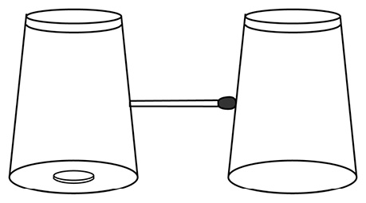
安全火柴是20世纪中叶发明的。在100年的时间里，火柴问题可能是流传最广的老少咸宜的趣味问题。现在，由于吸烟者主要使用打火机，所以火柴的使用率已经大不如前了。在这种情况下，火柴逐渐被牙签、铅笔和棉签取代。
杜德尼称下面这道题是“适合年轻读者的小问题”。
修整三角形
在下图中，16根火柴构成了8个等边三角形。
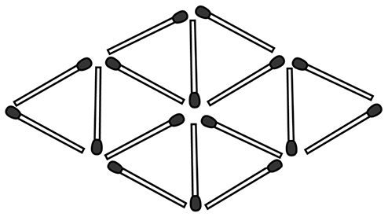
请拿走4根火柴，使剩下的火柴正好构成4个等边三角形，而且没有零散或多余的火柴。
变来变去的三角形
用12根火柴拼成包含6个等边三角形的六边形。
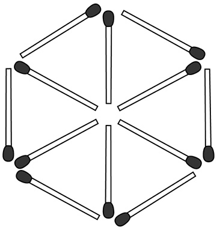
本题包含4个部分。
（1）移动两根火柴，把6个等边三角形变成5个。
（2）在新的图案中移动两根火柴，把5个等边三角形变成4个。
在所有4个步骤，拼成的图案中都不能有零散的火柴棒，但在（3）、（4）中，三角形的大小可以发生变化。
（3）移动两根火柴，把4个等边三角形变成3个。
（4）再移动两根火柴，把3个等边三角形变成两个。
接下来，我们想办法增加三角形的个数。下面这道题需要的火柴非常少，因此我很喜欢。
增加三角形的个数
（1）现有6根火柴拼成的两个三角形。如何移动两根火柴，使拼成的图案中出现4个三角形？火柴可以交叠。
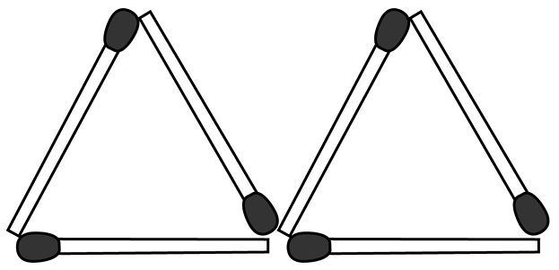
（2）用6根火柴拼成4个三角形，火柴不得交叠。
我之前曾让大家排列5枚硬币，并使硬币相互接触。下面是这道题的火柴版本。
如何才能相互接触
给你6根火柴，如何让每根火柴都与其他火柴相互接触？
如果有7根火柴呢？
对于只是末端相互接触的一堆火柴，我们有两种理解方式。第一，这就是一堆火柴。第二，我们还可以把它们看成由火柴连接一个个点形成的网络，例如下面这道题。
点对点
把12根火柴排列起来，使每根火柴的两端正好与另外两根火柴的其中一端相接触。换言之，创建一个点阵，然后用火柴将每个点与另外三个点连接起来。
下面，我们通过最后一道火柴问题，看看我们的老朋友杜德尼在这个领域做出的创新吧。
两个封闭区域
如下图所示，用20根火柴围成两个独立的矩形封闭区域。这两个矩形分别由6根和14根火柴构成，第二个矩形的面积是第一个的3倍。
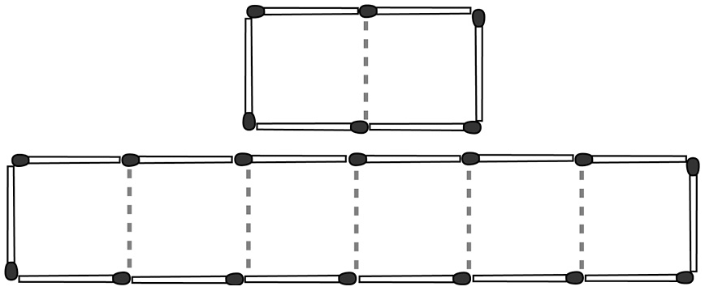
从构成大矩形的火柴中拿出1根，放到另一组火柴中，使两组的火柴数分别是7根和13根。如何用这两组火柴形成两个新的封闭区域，并使第二个区域的面积仍然是第一个的3倍？
在阅读杜德尼的著作时，我一直为他化腐朽为神奇的能力惊叹不已。口袋里常见的小玩意儿到了他的手里，就能设计出构思精巧的趣题来。下面这道使用了一联8张邮票的趣题就非常棒。没有邮票的话，用白纸代替即可。
不管怎么说，大家都应该准备一把剪刀了，因为后面的趣题可能需要用到剪刀。
折叠邮票
下图所示是一联邮票，被标记为1~8号。请大家将这联邮票沿边线折叠，使1号邮票朝上，其余邮票都在1号的下方。
你能将这些邮票折叠成1-5-6-4-8-7-3-2和1-3-7-5-6-8-4-2的次序吗（后者难度更大）？
杜德尼微笑着说道：“这道题非常有意思，不要轻言放弃。”
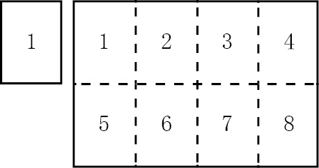
杜德尼还用一联正方形邮票设计了下面这道题。
4张邮票
如下图所示，你有一组3×4共计12张正方形邮票。因为朋友向你索要4张邮票，你决定从这组邮票中撕下4张，并让这4张邮票仍然连在一起，形成诸如1-2-3-4、1-2-5-6、1-2-3-6或1-2-3-7的组合。邮票不能通过某一角相连，但可以通过任一边连在一起。
这种连成一体的4张邮票组合共有多少种？
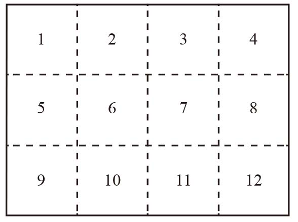
在书后的答案部分，我画出了连成一体的4张邮票可以构成的各种形状。如果你已经完成了解答，可以去看一看我的答案。是不是感觉很熟悉呢？
没错，杜德尼的这道邮票问题的答案就是大家熟知的俄罗斯方块。
很多人都玩过俄罗斯方块的游戏。它虽然非常简单，但是有很大的吸引力。游戏开始后，由4个方块相连构成的各种形状会从屏幕顶端向下掉落。你需要通过水平移动或旋转这两个操作，将这些图形叠加到一起。
俄罗斯方块的发明者阿列克谢·帕基特诺夫（Alexey Pajitnov）的灵感来自数学家所罗门·格伦布（Solomon Golomb）于1965年出版的一部著作。格伦布之所以对由方块构成各种形状感兴趣，则是受到了杜德尼的启发。
杜德尼没有接受过正式教育，但他天生就善于通过趣味问题来表现自己的奇思妙想。后来，数学家发现他设计的这些问题有较高的学术价值，值得深入研究。
杜德尼在他出版的第一本书《坎特伯雷趣题集》中，第一次利用方块连接而成的形状设计了一道趣题。
这道题的设计灵感来自约翰·海沃德（John Hayward）在一部关于征服者威廉的史书（1613年出版）中讲述的一个故事（但这个说法不完全可信）。威廉的两个儿子——亨利和罗伯特，去拜访法国的王位继承人路易斯。亨利在棋盘上赢了路易斯，随后两人打斗起来。海沃德写道：“亨利拿起棋盘打了路易斯一下，把他打得头破血流。接着，（亨利和罗伯特）赶紧骑上马，绝尘而去……尽管法国人在他们身后紧追不舍。”这真是一场闹剧！
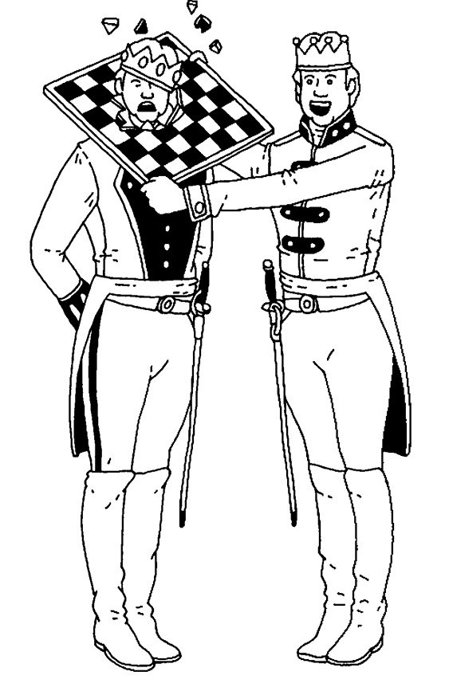
支离破碎的棋盘
下图展示的是一张破成了13个碎片的棋盘。这些碎片包含5个方格可以拼成的所有形状，以及一个由4个方格构成的方块。
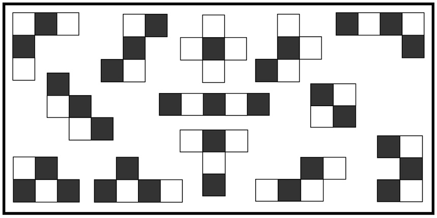
你能用这些碎片拼成一个完整的棋盘吗？
杜德尼建议从正方形的纸上剪下这些形状，然后把它们一一贴到纸板上。他说：“它们将持续不断地为我们的家庭生活增添乐趣。完成之后……不要记录你是如何拼贴的。当下次再拼的时候，你就会发现你仍然需要开动脑筋。”
既然已经准备好了纸与剪刀，就来看看下面这个有意思的折纸问题吧。解出这道题的速度应该比上一道题快吧。
折立方体
如下图所示，把一张3×3的正方形纸正中间的小方格剪去。
你能将这一圈8个小方格折成一个立方体吗？立方体有6个面，因此将有两个方格重叠。
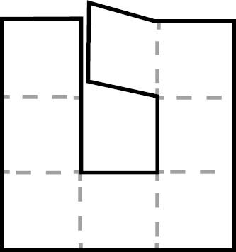
如果你参加过童子军，学习过领带皮环的打法，就说明你的童年没有虚度。你学到的知识现在（终于）也可以派上用场了。
不可思议的辫子
从塑料袋上剪下一个细长条，然后在上面割两条细缝，如下图A所示。
你能用这个塑料条编成图B中的辫子吗？
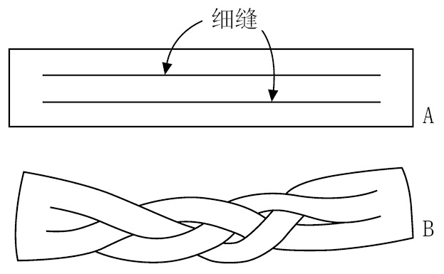
我第一次做这道题时，用的是纸条。但纸条很容易被扯断，远没有塑料条的效果好。如果你是童子军，也可以用皮革条。
将三股细长条编成辫子并不需要创造性思维，只需要用正确的方法把它们编起来就可以了。注意：这三股细长条彼此缠绕，与发辫非常相似。它们一共相交了6次，虽然缠绕在一起，但没有发生扭曲。你来试试看吧！
在做本章最后一道题时，我们需要准备一些新道具，包括绳子和纸板。用纸板剪出两个小矩形，然后如下图所示，用绳子将它们连起来。在每片纸板朝上的一面写上“正面”两个字。
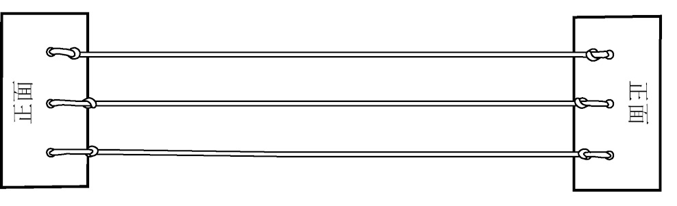
从拓扑学的角度看，这个模型与上一题中的塑料条形状相同：都分成了三股，在两端的位置三股彼此相连。但是，我们现在用的是绳子，这样可以更好地利用它的某些物理属性。
20世纪30年代，丹麦诗人、趣味数学家皮亚特·海恩（Piet Hein）经常造访尼尔斯·玻尔（Niels Bohr）的哥本哈根理论物理研究所，并在那里接触到上文中介绍的绳子模型。在他的努力下，下面这道题得到了广泛传播。
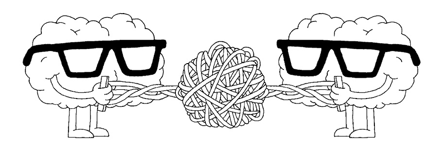
编绳游戏
如下图A所示，握住纸板-绳子模型的左端，让模型右端从上面两根绳子之间穿过，并翻转一整圈。这样一来，写在右端纸板上的“正面”两个字肯定会再次朝向上方，模型变成了图B的样子。接下来，按照图示的方式，让模型右端从下面两根绳子之间穿过并翻转一整圈，变成图C的样子。
如果不允许翻转任何一个纸板，你能解开缠绕在一起的绳子吗？
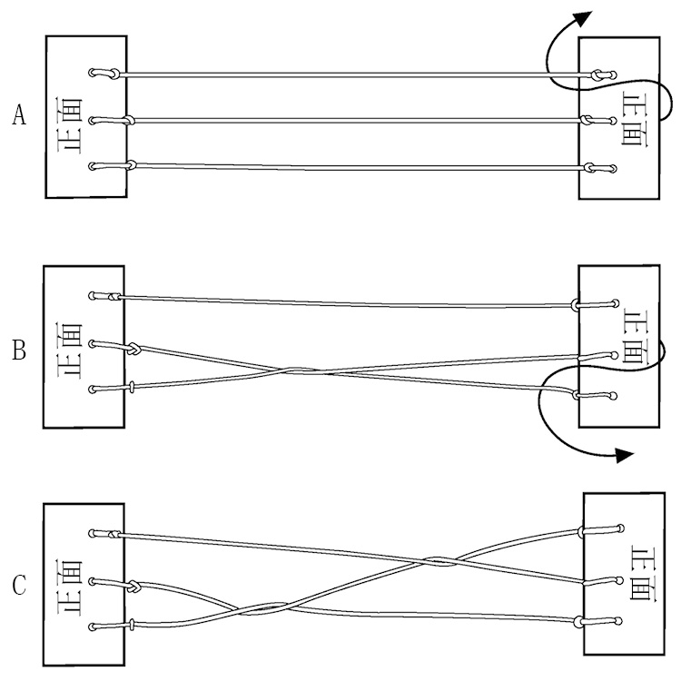
为了确保不转动任何一个纸板，请你用左手握住模型左端，用右手握住模型右端。确保两个纸板上的“正面”二字一直朝向你，且两个纸板保持在同一平面上。由于不能翻转纸板，所以你只能让纸板在绳子之间平移。
不可思议的是，纸板多次平移之后，绳子就会解开。我觉得这可能是本章介绍的最好玩的趣题了，还有什么比毫不费力地解开乱七八糟的绳结更令人感到满足的呢？
为确保你能享受到这份乐趣，我决定不在本书的答案部分给出这道题的答案，所以只能靠你自己了。
一旦你成功地解决了这道题，你就会喜欢上这个模型。如果你想再做一道解绳结问题，只需重复上一道题的步骤即可：左端纸板不动，右端纸板翻转两整圈。上一次，纸板在完成第一次翻转时，是由前至后从上面两根绳子中穿过的。这一次，你可以让纸板由后向前翻转，也可以让纸板从下面两根绳子中由后向前或由前向后翻转，还可以像拨电话拨号盘一样，让纸板旋转360度。第二次翻转时也可以选择这些方式。
如果只翻转一次，是不可能通过在绳子间平移纸板的方式解开绳结的。但是，如果翻转两圈，那么无论你是用什么方式完成翻转的，绳结都可以解开。
皮亚特·海恩把这个游戏称作编绳游戏，并指出两个人一起玩时最有趣。一个人握住模型的左端纸板，另一个人握住右端纸板。一个人把手里的纸板翻转两圈，让另一个人理顺绳子。两个人依次扮演出题人和解题人的角色，最终解绳结速度最快的人获胜。
翻转两圈，绳结一定可以解开，而如果只转一圈，绳结则无法解开。这是这个纸板–绳子模型最有意思的一点，对于我们理解某些空间旋转的特点具有启示作用。因此，尼尔斯·玻尔和他的同事都对它非常感兴趣。在哥本哈根逗留过一段时间的英国量子物理学家保罗·狄拉克（Paul Dirac）在教学过程中也使用过这个模型，用以“说明三维空间旋转群的基本群只有一个生成元，它的周期为2”。
我们已经知道，好的趣味问题具有魔术表演的效果。不仅如此，有的趣题在被用来解释严肃的科学时，也可以发挥显著的作用。